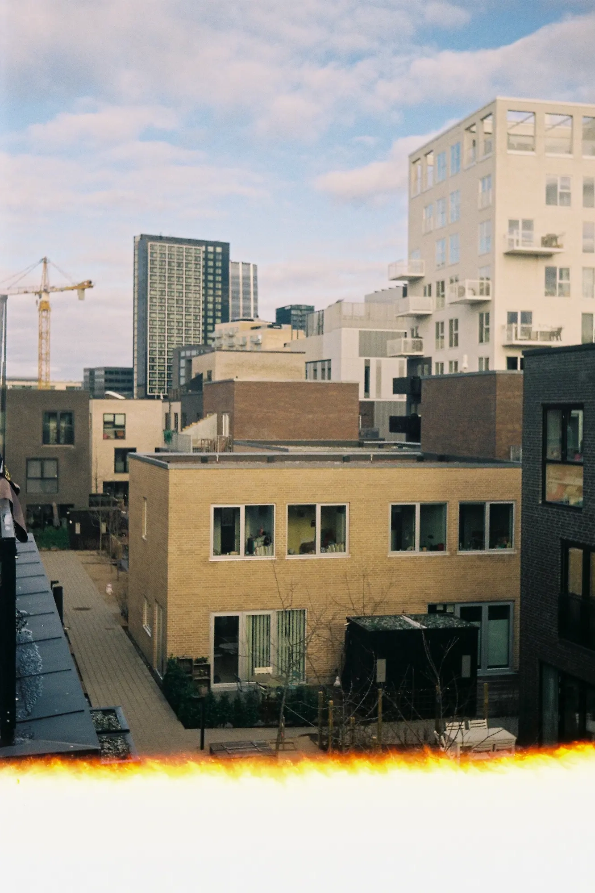

Pierre Falcke
Men indtil for kort tid siden, så du hans værker et par gange om
dagen, hver dag, året rundt. Pierre Falcke var en af verdens bedst
sælgende stock-fotografer, og han solgte over 2 millioner fotos om
året. Men Pierre kunne ikke drømme om at bruge sine egne fotos -
faktisk kan han ikke fordrage sit eget arbejde.
Pierre sælger 2 millioner fotos om året.
Det svarer til én fotolicens hvert 16. sekund.
Du ser hans fotos ca. 2 gange om dagen.
Hvad er stock-fotos?

Stock-fotos er billeder, der kan købes fra et foto-website. De bruges
af aviser, til markedsføring og som indhold på websites. En licens til
at bruge et foto koster typisk mellem 10 og 100 kroner, alt afhængig
af hvad de skal bruges til.
Stock-fotos bliver ofte kritiseret for at være uden sjæl - det er de
der billeder af en læge i hvid kittel med stetoskop om halsen på en
meget hvid baggrund eller en meget glad dame fra virksomhedens salgs-
eller supportafdeling.
Stock-fotos har eksisteret i mange år. Før branchen blev digital,
tilbød stock-foto virksomhederne billedmapper, der kunne bestilles
fra. Men stock-foto branchen var én af de tidlige til at blive fuldt
digitaliseret.
Pierres berømmelse
Pierres interesse for foto startede som ganske ung - som 10-årig fik
han sin fars gamle Rollei-kamera, og begyndte at skyde løs. Det var
før den digitale revolution, så alle Pierres lommepenge blev brugt på
filmruller og fremkaldelse af film. Pierre fortsatte med at
fotografere på film op gennem gymnasietiden.

Pierre over til digital fotografering i starten af 2000’erne, da han
begyndte at studere fotografisk kommunikation på DMJX. Her åbnede en
ny verden sig: Reklamefotografering i studie, lyssætning og
manipulering af billeder i Photoshop blev hans nye stil. På det
tidspunkt var stock-foto industrien i starten af en revolution: De
første online stock-foto websites begyndte at komme på markedet, men
de store, etablerede spillere på markedet holdt lidt igen. Pierre så
det for sig:
“Om ganske få år er hele branchen digital, og dem der ikke hopper med
på den digitale vogn, lukker.”
Så Pierre gav sig selv en udfordring: At blive landets bedst sælgende
stock-fotograf. Pierre lejede et gammelt, billigt erhvervslokale i
Ishøj industri, fik fløjet billige skuespillere ind fra Polen og
Baltikum, og fotograferede 10 timer om dagen. Pierres profeti om
stock-foto branchen holdt stik. Pierre var allerede en af landets
bedst sælgende stock-fotografer, før han blev færdig med studiet på
DMJX.
En skillevej
Pierre tjente godt det følgende årti. Men stille og roligt begyndte
billederne også at give ham kvalme. Han kunne ikke holde sit eget
arbejde ud, og måtte finde et modsvar til alle de blankpolerede fotos.
Noget han kunne lave med stolthed. Pierre bestluttede sig for at
droppe stock-fotos, og vende tilbage til rødderne.

Han søgte inspiration i analog fotografering, i Lomo-bevægelsen,
Glitch art og polaroid fotografering, og begyndte stille og roligt at
skabe sig en ny stil - en stil med fokus på det uperfekte, og hvor der
er et uforudsigeligt element i det at tage billeder.
Pierre tog det endda så vidt at han ikke kun droppede at tage
stock-fotos. Han fjernede også alle stock-fotos fra de tjenester, han
solgte sine fotos hos. Han gik fra at være en god forretningsdrivende
til at blive en vaskeægte boheme-type på rekordtid.


Analog fotografering
Fotografering med gode, gammeldags filmruller. Analog fotografering
stiger for tiden i popularitet, specielt blandt unge, og prisen på
filmruller og vintage-kameraer skyder i vejret. Mange fotografer
synes at film-fotografering er mere ægte har mere “sjæl.” Analog
fotografering er langsommmere, hvert enkelt billede koster penge, og
man bliver nødt til at overveje motiv og lys grundigere før der
skydes - tænk før du trykker.
Analog fotografering kan gå galt
mange steder i processen, og det giver også mulighed for at
eksperimentere med “det uperfekte og uforudsigelige i processen.”
Man kan f.eks. skyde på for gamle filmruller, arbejde med
forskellige teknikker som “lens whacking” og filtre/ting foran
objektivet, og man kan pille ved de kemiske processer under
fremkaldelse af filmen.

Glitch art
Når der sker en teknisk fejl i et medie/en kommunikationskanal
kaldes det en glitch. Glitch art går ud på at dyrke fejlene for at
skabe kunst. En meget typisk glitch er små analoge eller digitale
fejl i farvegengivelsen af billeder.
Lomografi
Et lomografi er egentlig bare et fotografi skudt uden videre
omtanke, og med noget foto-udstyr af ret alternativ kvalitet.
Lomografier skydes ofte på gode, gammeldags filmruller, men kan også
skyde digitalt. Det kan måske lyde lidt anti-fotograf-agtigt. Men en
del foto-entusiaster dyrker den slags, og ser det som en foto-genre
eller endda en livsstil.
Lomo-regler
- Tag kameraet med overalt
- Brug det på alle tidspunkter – dag og nat
-
Lomografi er ikke en forstyrrelse af dit liv, men en del af det
- Prøv hofteskuddet!
- Gå tæt på de objekter du har et ønske om at lomografere
- Tænk ikke (William Firebrace)
- Vær hurtig
- Du behøver ikke at vide hvad du fanger på film på forhånd
- Heller ikke efter
- Du skal ikke bekymre dig om nogen regler